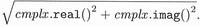

| I l@ve RuBoard |
The C++ standard library provides the template class complex<> to operate on complex numbers. Just to remind you: Complex numbers are numbers that have two parts — real and imaginary. The imaginary part has the property that its square is a negative number. In other words, the imaginary part of a complex number is the factor i, which is the square root of minus 1.
The class complex is declared in the header file <complex>:
#include <complex>
In <complex>, the class complex is defined as follows:
namespace std {
template <class T>
class complex;
}
The template parameter T is used as the scalar type of both the real and the imaginary parts of the complex number.
In addition, the C++ standard library provides three specializations for float, double, and long double:
namespace std {
template<> class complex<float>;
template<> class complex<double>;
template<> class complex<long double>;
}
These types are provided to allow certain optimizations and some safer conversions from one complex type to the other.
The following program demonstrates some of the abilities of class complex to create complex numbers, print different representations of complex numbers, and perform some common operations on complex numbers.
// num/complex1.cpp
#include <iostream>
#include <complex>
using namespace std;
int main()
{
/*complex number with real and imaginary parts
*-real part: 4.0
*-imaginary part: 3.0
*/
complex<double> c1(4.0,3.0);
/*create complex number from polar coordinates
*-magnitude:5.0
*-phase angle:0.75
*/
complex<float> c2(polar(5.0,0.75));
// print complex numbers with real and imaginary parts
cout << "c1: " << c1 << endl;
cout << "c2: " << c2 << endl;
//print complex numbers as polar coordinates
cout << "c1: magnitude: " << abs (c1)
<< " (squared magnitude: " << norm(c1) << ") "
<< " phase angle: " << arg(c1) << endl;
cout << "c2: magnitude: " << abs(c2)
<< " (squared magnitude: " << norm (c2) << ") "
<< " phase angle: " << arg(c2) << endl;
//print complex conjugates
cout << "c1 conjugated: " << conj(c1) << endl;
cout << "c2 conjugated: " << conj(c2) << endl;
//print result of a computation
cout << "4.4 + c1 * 1.8: " << 4.4 + c1 * 1.8 << endl;
/*print sum of c1 and c2:
*-note: different types
*/
cout << "c1 + c2: "
<< c1 + complex<double>(c2.real(),c2.imag()) << endl;
// add square root of c1 to c1 and print the result
cout << "c1 += sqrt(c1): " << (c1 += sqrt(c1)) << endl;
}
The program might have the following output (the exact output depends on the implementation specific properties of the type double):
c1: (4,3) c2: (3.65844,3.40819) c1: magnitude: 5 (squared magnitude: 25) phase angle: 0.643501 c2: magnitude: 5 (squared magnitude: 25) phase angle: 0.75 c1 conjugated: (4,-3) c2 conjugated: (3.65844,-3.40819) 4.4 + c1 * 1.8: (11.6,5.4) c1 + c2: (7.65844,6.40819) c1 += sqrt(c1): (6.12132,3.70711)
A second example contains a loop that reads two complex numbers and processes the first complex number raised to the power of the second complex number:
// num/complex2.cpp
#include <iostream>
#include <complex>
#include <cstdlib>
#include <limits>
using namespace std;
int main()
{
complex<long double> c1, c2;
while (cin.peek() != E0F) {
// read first complex number
cout << "complex number c1: ";
cin >> c1;
if (!cin) {
cerr << "input error" << endl;
return EXIT_FAILURE;
}
//read second complex number
cout << "complex number c2: ";
cin >> c2;
if (!cin) {
cerr << "input error" << endl;
return EXIT.FAILURE;
}
if (c1 == c2) {
cout << "c1 and c2 are equal !" << endl;
}
cout << "c1 raised to the c2: " << pow(c1,c2)
<< endl << endl;
// skip rest of line
cin.ignore (numeric_limits<int>::max(),'\n');
}
}
Table 12.1 shows some possible input and output of this program.
| c1 | c2 | Output |
|---|---|---|
| 2 | 2 | c1 raised to c2: (4,0) |
| (16) | 0.5 | c1 raised to c2: (4,0) |
| (8,0) | 0.333333333 | c1 raised to c2: (2,0) |
| 0.99 | (5) | c1 raised to c2: (0.95099,0) |
| (0,2) | 2 | c1 raised to c2: (-4,4.89843e-16) |
| (1.7,0.3) | 0 | c1 raised to c2: (1,0) |
| (3,4) | (-4,3) | c1 raised to c2: (4.32424e-05,8.91396e-05) |
| (1.7,0.3) | (4.3,2.8) | c1 raised to c2: (-4.17622,4.86871) |
Note that you can input a complex number by passing only the real part as a single value with or without parentheses or by passing the real and imaginary parts separated by a comma in parentheses.
The template class complex provides the operations described in the following subsections.
Table 12.2 lists the constructors and assignment operations for complex. The constructors provide the ability to pass the initial values of the real and the imaginary parts. If they are not passed, they are initialized by the default constructor of the value type.
The assignment operators are the only way to modify the value of an existing complex number. The computed assignment operators +=, -=, *=, and /= add, subtract, multiply, and divide the value of the second operand to, from, by, and into the real part of the first operand. The imaginary part of both operands is left unchanged.
The auxiliary polar() function provides the ability to create a complex number that is initialized by polar coordinates (magnitude and phase angle in radians):
// create a complex number initialized from polar coordinates std::complex<double> c2(std::polar(4.2,0.75));
A problem exists when you have an implicit type conversion during the creation. For example, this notation works:
std::complex<float> c2(std::polar(4.2,0.75)); // OK
However, the following notation with the equal sign does not:
std::complex<float> c2 = std::polar(4.2,0.75); // ERROR
| Expression | Effect |
|---|---|
| complex c | Creates a complex number with 0 as the real part and 0 as the imaginary part (0 + 0i) |
| complex c(1.3) | Creates a complex number with 1.3 as the real part and 0 as the imaginary part (1.3 + 0i) |
| complex c(1.3,4.2) | Creates a complex number with 1.3 as the real part and 4.2 as the imaginary part (1.3 + 4.2i) |
| complex c1(c2) | Creates c1 as a copy of c2 |
| polar (4. 2) | Creates a temporary complex number from polar coordinates (4.2 as magnitude rho and 0 as phase angle theta) |
| polar (4. 2, 0.75) | Creates a temporary complex number from polar coordinates (4.2 as magnitude rho and 0.75 as phase angle theta) |
| conj (c) | Creates a temporary complex number that is the conjugated complex number of c (the complex number with the negated imaginary part) |
| c1 = c2 | Assigns the values of c2 to c1 |
| c1 += c2 | Adds the value of c2 to c1 |
| c1 -= c2 | Subtracts the value of c2 from c1 |
| c1 *= c2 | Multiplies the value of c2 by c1 |
| c1 /= c2 | Divides the value of c2 into c1 |
This problem is discussed in the next subsection.
The auxiliary conj() function provides the ability to create a complex number that is initialized by the conjugated complex value of another complex number (a conjugated complex value is the value with a negated imaginary part):
std::complex<double> c1(1.1,5.5);
std::complex<double> c2(std::conj (c1)) ; // initialize with
// complex<double>(1.1,-5.5)
The constructors of the specializations for float, double, and long double are designed in such a way that safe conversions such as complex<float> to complex<double> are allowed to be implicit, but less safe conversions such as complex<long double> to complex<double> must be explicit (see page 542 for the declarations in detail):
std::complex<float> cf; std::complex<double> cd; std::complex<long double> cld; ... std:: complex<double> cd1 = cf; // OK: safe conversion std::complex<double> cd2 = cld; // ERROR: no implicit conversion std::complex<double> cd3(cld); // OK: explicit conversion
In addition, there are no constructors from any other complex type defined. In particular, you can't convert a complex with an integral value type into a complex with value type float, double, or long double. However, you can convert the values by passing the real and imaginary parts as separate arguments:
std::complex<double> cd; std::complex<int> ci; ... std::complex<double> cd4 = ci; // ERROR: no implicit conversion std::complex<double> cd5(ci); // ERROR: no explicit conversion std::complex<double> cd6(ci.real(), ci.imag()); // OK
Unfortunately, the assignment operators allow less safe conversions. They are provided as template functions for all types. So, you can assign any complex type as long as the value types are convertible[1] :
[1] The fact that constructors for the complex specializations allow only safe implicit conversions, whereas the assignment operations allow any implicit conversion, is probably a mistake in the standard.
std::complex<double> cd; std::complex<long double> cld; std::complex<int> ci; ... cd = ci; // OK cd = cld; // OK
This problem also relates to polar() and conj(). For example, the following notation works fine:
std::complex<float> c2(std::polar(4.2,0.75)); // OK
But, the notation with the equal sign does not:
std::complex<float> c2 = std::polar(4.2,0.75); // ERROR
The reason for this is that the expression
std::polar(4.2,0.75)
creates a temporary complex<double> and the implicit conversion from complex<double> to complex<float> is not defined.[2]
[2] There is a minor difference between
X x; Y y(x); // explicit conversion
and
X x; Y y = x; // implicit conversion
The former creates a new object of type Y by using an explicit conversion from type X, whereas the latter creates a new object of type Y by using an implicit conversion.
Table 12.3 shows the different functions provided to access the attributes of complex numbers.
| Expression | Effect |
|---|---|
| c.real() | Returns the value of the real part (as a member function) |
| real(c) | Returns the value of the real part (as a global function) |
| c.imag() | Returns the value of the imaginary part (as a member function) |
| imag(c) | Returns the value of the imaginary part (as a global function) |
| abs(c) | Returns the absolute value of c |
| norm(c) | Returns the squared absolute value of c(c.real()2 + c.imag()2) |
| arg(c) | Returns the angle of the polar representation of c (equivalent to atan2(c.imag(), c.real()) as phase angle) |
Note that real() and imag() provide only read access to the real and the imaginary parts. To change only the real part or only the imaginary part you must assign a new complex number. For example, the following statement sets the imaginary part of c to 3.7:
std::complex<double> c; ... c = std::complex<double>(c.real(),3.7);
To compare complex numbers, you can only check for equality (Table 12.4). The operators == and != are defined as global functions so that one of the operands may be a scalar value. If you use a scalar value as the operand it is interpreted as the real part, with the imaginary part having the default value of its type (which is usually 0).
| Expression | Effect |
|---|---|
| c1 == c2 | Returns whether c1 is equal to c2 (c1.real()==c2.real() && c1.imag()==c2. imag()) |
| c == 1.7 | Returns whether c is equal to 1.7 (c.real()==1.7 && c.imag()==0.0) |
| 1.7 == c | Returns whether c is equal to 1.7 (c.real()==1.7 && c.imag()==0.0) |
| c1 != c2 | Returns whether c1 differs from c2 (c1.real()!=c2.real() || c1.imag() !=c2 imag()). |
| c != 1.7 | Returns whether c differs from 1.7 (c.real() !=1.7 || c.imag() !=0.0) |
| 1.7 != c | Returns whether c differs from 1.7 (c.real() !=1.7 || c.imag() !=0.0) |
Other comparison operations, such as operator <, are not defined. Although it is not impossible to define an ordering for complex values, such orderings are neither very intuitive nor very useful. Note, for example, that the magnitude of complex numbers by itself is not a good basis to order complex values because two complex values can be very different and yet have identical magnitude (1 and -1 are two such numbers). An add hoc criterion can be added to create a valid ordering. For example, given two complex values c1 and c2, you could deem c1 < c2 when |c1| < |c2| or, if both magnitudes are equal, when arg(c1) < arg(c2). However, such a criterion invariably has little or no mathematical meaning.[3]
[3] Thanks to David Vandevoorde for pointing this out.
As a consequence, you can't use complex as the element type of an associative container (provided you use no user-defined sorting criterion). This is because associative containers use the function object less<>, which calls operator <, to be able to sort the elements (see Section 5.10.1,).
By implementing a user-defined operator < you could sort complex numbers and use them in associative containers. Note that you should be very careful not to pollute the standard namespace. For example:
template <class T>
bool operator< (const std::complex<T>& c1,
const std::complex<T>& c2)
{
return std::abs(c1)<std::abs(c2) ||
(std::abs(c1)==std::abs(c2) &&
std::arg(c1)<std::arg(c2));
}
Complex numbers provide the four basic arithmetic operations and the negative and positive signs (Table 12.5).
| Expression | Effect |
|---|---|
| c1 + c2 | Returns the sum of c1 and c2 |
| c + 1.7 | Returns the sum of c and 1.7 |
| 1.7 + c | Returns the sum of 1.7 and c |
| c1 - c2 | Returns the difference between c1 and c2 |
| c - 1.7 | Returns the difference between c and 1.7 |
| 1.7 - c | Returns the difference between 1. 7 and c |
| c1 * c2 | Returns the product of c1 and c2 |
| c * 1.7 | Returns the product of c and 1.7 |
| 1.7 * c | Returns the product of 1.7 and c |
| c1 / c2 | Returns the quotient of c1 and c2 |
| c / 1.7 | Returns the quotient of c and 1.7 |
| 1.7 / c | Returns the quotient of 1.7 and c |
| - c | Returns the negated value of c |
| + c | Returns c |
| c1 += c2 | Equivalent to c1 = c1 + c2 |
| c1 -= c2 | Equivalent to c1 = c1 - c2 |
| c1 *= c2 | Equivalent to c1 = c1 * c2 |
| c1 /= c2 | Equivalent to c1 = c1 / c2 |
Class complex provides the common I/O operators << and >> (Table 12.6).
| Expression | Effect |
|---|---|
| strm << c | Writes the complex number c to the ostream strm |
| strm >> c | Reads the complex number c from the istream strm |
The output operator writes the complex number with respect to the actual stream state with the format:
(realpart, imagpart)
In particular, the output operator is defined as equivalent to the following implementation:
template <class T, class charT, class traits>
std::basic_ostream<charT, traits>&
operator<< (std::basic_ostream<charT, traits>& strm,
const std::complex<T>& c)
{
// temporary value string to do the output with one argument
std::basic_ostringstream<charT, traits> s;
s.flags (strm.flags()); // copy stream flags
s.imbue (strm.getloc()); // copy stream locale
s.precision(strm.precision()); // copy stream precision
// prepare the value string
s << '(' << c.real() << ',' << c.imag() << ')' << std::ends;
// write the value string
strm << s.str();
return strm;
}
The input operator provides the ability to read a complex number with one of the following formats:
(realpart, imagpart) (realpart) realpart
If none of the formats fits according to the next characters in the input stream, the ios::failbit is set, which might throw a corresponding exception (see Section 13.4.4,).
Unfortunately, you can't specify the separator of complex numbers between the real and the imaginary parts. So if you have a comma as a "decimal point" (as is the case in German), I/O looks really strange. For example, a complex number with 4.6 as the real part and 2.7 as the imaginary part would be written as
(4,6,2,7)
See page 532 for an example of how to use the I/O operations.
Table 12.7 lists the transcendental functions (trigonometric, exponential, and so on) for complex.
| Expression | Effect |
|---|---|
| pow(c, 3) | Complex power c3 |
| pow(c, 1.7) | Complex power c1.7 |
| pow(c1, c2) | Complex power c1c2 |
| pow(1.7, c) | Complex power 1.7C |
| exp(c) | Base e exponential of c (ec) |
| sqrt(c) | Square root of c () |
| log(c) | Complex natural logarithm of c with base e (ln c) |
| log10(c) | Complex common logarithm of c with base 10 (lg c) |
| sin(c) | Sine of c (sin c) |
| cos(c) | Cosine of c (cos c) |
| tan(c) | Tangent of c (tan c) |
| sinh(c) | Hyperbolic sine of c (sinh c) |
| cosh(c) | Hyperbolic cosine of c (cosh c) |
| tanh(c) | Hyperbolic tangent of c (tanh c) |
This subsection describes all operations of class complex<> in detail. In the following definitions, T is the template parameter of class complex<>, which is the type of the real and the imaginary parts of the complex value.
complex:: value_type
The type of the real and the imaginary parts.
complex::complex ()
The default constructor.
Creates a complex value in which the real and the imaginary parts are initialized by an explicit call of their default constructor. Thus, for fundamental types, the initial value of the real and the imaginary parts is 0 (see page 14 for the default value of fundamental types).
complex::complex (const T& re)
Creates a complex value in which re is the value of the real part, and the imaginary part is initialized by an explicit call of its default constructor (0 for fundamental data types).
This constructor also defines an automatic type conversion from T to complex.
complex::complex (const T& re, const T& im)
Creates a complex value, with re as the real part and im as the imaginary part.
complex polar (const T& rho)
complex polar (const T& rho, const T& theta)
Both forms create and return the complex number that is initialized by polar coordinates.
rho is the magnitude.
theta is the phase angle in radians (default: 0).
complex conj (const complex& cmplx)
Creates and returns the complex number that is initialized by the conjugated complex value (the value with the negated imaginary part) of cmplx.
complex :: complex (const complex& cmplx)
The copy constructor.
Creates a new complex as a copy of cmplx.
Copies the real and imaginary parts.
In general, this function is provided as both a nontemplate and a template function (see page 11 for an introduction to member templates). Thus, in general, automatic type conversions of the element type are provided.
However, the specializations for float, double, and long double restrict copy constructors, so the less safe conversions from double and long double to float, as well as from long double to double, must be explicit and allow no other element type conversions:
namespace std {
template<> class complex<float> {
public:
explicit complex(const complex<double>&);
explicit complex(const complex<long double>&);
// no other kinds of copy constructors
...
};
template<> class complex<double> {
public:
complex(const complex<float>&);
explicit complex(const complex<long double>&);
// no other kinds of copy constructors
...
};
template<> class complex<long double> {
public:
complex(const complex<float>&);
complex(const complex<double>&);
// no other kinds of copy constructors
...
};
}
See page 534 for more information about the implications from this.
complex& complex::operator = (const complex& cmplx)
Assigns the value of complex cmplx.
Returns *this.
This function is provided as both a nontemplate and a template function (see page 11 for an introduction to member templates). Thus, automatic type conversions of the element type are provided. (This is also the case for the specializations that are provided by the C++ standard library.)
complex& complex::operator += (const complex& cmplx)
complex& complex::operator -= (const complex& cmplx)
complex& complex::operator *= (const complex& cmplx)
complex& complex::operator /= (const complex& cmplx)
These operations add, subtract, multiply, and divide the value of cmplx to, from, by, and into *this respectively and store the result in *this.
They return *this.
These operations are provided as both a nontemplate and a template function (see page 11 for an introduction to member templates). Thus, automatic type conversions of the element type are provided. (This is also the case for the specializations that are provided by the C++ standard library.)
Note that the assignment operators are the only functions that allow you to modify the value of an existing complex.
T complex :: real () const
T real (const complex& cmplx)
T complex::imag () const
T imag (const complex& cmplx)
These functions return the real or imaginary part respectively.
Note that the return value is not a reference. Thus, you can't use these functions to modify the real or the imaginary parts. To change only the real part or only the imaginary part you must assign a new complex number (see page 536).
T abs (const complex& cmplx)
Returns the absolute value (magnitude) of cmplx.
The absolute value is 
T norm (const complex& cmplx)
Returns the squared absolute value (squared magnitude) of cmplx.
The squared absolute value is cmplx.real()2 + cmplx.imag()2.
T arg (const complex& cmplx)
Returns the angle of the polar representation of cmplx in radians.
It is equivalent to atan2(cmplx.imag(), cmplx.real()) as the phase angle.
ostream& operator << (ostream& strm, const complex& cmplx)
Writes the value of cmplx to the stream strm in the format (realpart, imagpart)
See page 539 for the exact behavior of this operation.
istream& operator >> (istream& strm, complex& cmplx)
Reads a new value from strm into cmplx.
Valid input formats are
(realpart, imagpart)
(realpart)
realpart
See page 539 for the exact behavior of this operation.
complex operator+ (const complex& cmplx)
The positive sign.
Returns cmplx.
complex operator- (const complex& cmplx)
The negative sign.
Returns the value of cmplx with the negated real and the negated imaginary parts.
complex binary-op (const complex& cmplx1, const complex& cmplx2)
complex binary-op (const complex& cmplx, const T& value)
complex binary-op (const T& value, const complex& cmplx)
All forms return a complex number with the result ofbinary-op.
binary-op may be any of the following:
operator + operator - operator * operator /
If a scalar value of the element type is passed, it is interpreted as the real part, with the imaginary part having the default value of its type (which is 0 for fundamental types).
bool comparison (const complex& cmplx1, const complex&, cmplx2)
bool comparison (const complex& cmplx, const T& value)
bool comparison (const T& value, const complex& cmplx)
Returns the result of the comparison of two complex numbers or the result of the comparison of a complex number with a scalar value.
comparison may be any of the following:
operator == operator !=
If a scalar value of the element type is passed, it is interpreted as the real part, with the imaginary part having the default value of its type (which is 0 for fundamental types).
Note that no operators <, <=, >, and >= are provided.
complex pow (const complex& base, int exp)
complex pow (const complex& base, const T& exp)
complex pow (const complex& base, const complex& exp)
complex pow (const T& base, const complex& exp)
All forms return the complex power of base raised to the expth power, defined as exp (exp*log(base)).
The branch cuts are along the negative real axis.
The value returned for pow (0,0) is implementation defined.
complex exp (const complex& cmplx)
Returns the complex base e exponential of cmplx.
complex sqrt (const complex& cmplx)
Returns the complex square root of cmplx in the range of the right halt plane.
If the argument is a negative real number, the value returned lies on the positive imaginary axis.
The branch cuts are along the negative real axis.
complex log (const complex& cmplx)
Returns the complex natural base e logarithm of cmplx.
When cmplx is a negative real number, imag(log(cmplx)) is pi.
The branch cuts are along the negative real axis.
complex log10 (const complex& cmplx)
Returns the complex base 10 logarithm of cmplx.
It is equivalent to log(cmplx)/log(10).
The branch cuts are along the negative real axis.
complex sin (const complex& cmplx)
complex cos (const complex& cmplx)
complex tan (const complex& cmplx)
complex sinh (const complex& cmplx)
complex cosh (const complex& cmplx)
complex tanh (const complex& cmplx)
These operations return the corresponding complex trigonometric operation on cmplx.
| I l@ve RuBoard |